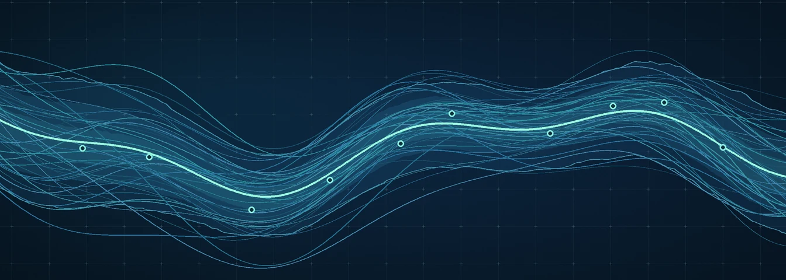

Bayesian inferenceLikelihood tempering in Bayesian neural networks
How much can a wide variational network learn from data?
Read overviewUniversity of Toronto
PhD student in Statistics
I study approximate Bayesian inference and how we can use it to learn about stars and galaxies from images.
This neural network predicts w₁w₂. At likelihood weights 1 and 4, the observation y = 1.5 favors two peaks because flipping both signs leaves the prediction unchanged.
For input 1, a linear network with one hidden unit multiplies two weights. Each weight has an independent standard normal prior. The observation is synthetic, with Gaussian noise of standard deviation 0.65.
At λ = 0 the plot shows the prior. At λ = 1 it shows the ordinary posterior. At λ = 4 the observation gets four times the weight in the log posterior. Each density is scaled to its own peak.
Selected work

Bayesian inferenceHow much can a wide variational network learn from data?
Read overviewCan a model distinguish real coin flips from an imitation?
Read overviewWhen do clusters of high values form a spatial hotspot?
Read overviewAbout me
I’m a first-year PhD student at the University of Toronto, jointly supervised by Joshua Speagle and Thibault Randrianarisoa. I earned my Honours BSc in statistics and mathematics with high distinction in 2025 and my MSc in statistics in 2026, both at U of T.
I also work with Malcolm Binns at Baycrest’s Rotman Research Institute on questions in dementia research. Previously, two NSERC Undergraduate Student Research Awards supported my work with Mike Kouritzin at the University of Alberta.
Curriculum vitaeFor students